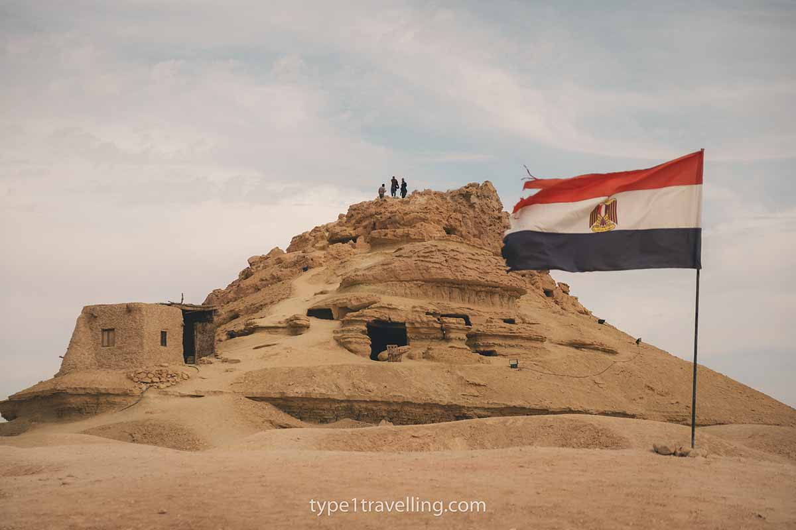
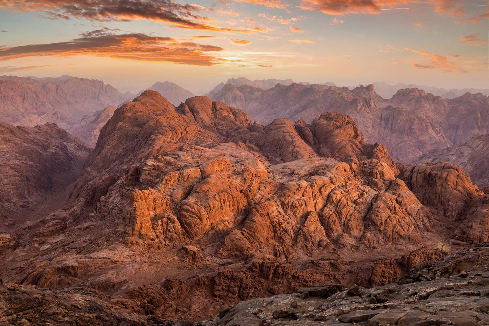
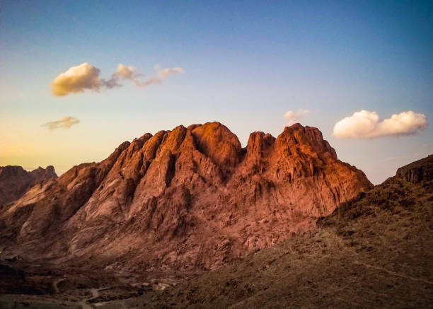

MOUNTAINS

Mount Saint Catherine
Mount Saint Catherine is located in the South Sinai Governorate and is considered the highest mountain peak in Egypt, with an elevation of about 2,629 meters above sea level.Mount Saint Catherine is considered a popular destination for adventure and nature lovers, where visitors can climb the mountain and enjoy watching the sunrise and sunset from its summit. From the top, the Aqaba and Suez Gulfs can also be seen.The area surrounding the mountain is characterized by its natural beauty, as it contains green valleys and towering mountains, making it an ideal place for hiking and camel riding.
Mount Al-Madoura
Located 150 kilometers from Cairo, and 40 from the Egyptian city of Fayoum, is Mount Al-Madoura in the Wadi El-Rayan area in the Western Desert, which is one of the lesser-known tourist spots.At the foot of the mountain, there is a beach about 500 meters long, and it is one of the picturesque natural scenes of the lake that you can enjoy visiting.Jabal Al-Madoura is considered a tourist attraction, where one can go on safari trips, experience the adventure of climbing it, and practice sandboarding on its soft sands. It is also possible to camp, with the possibility of hosting tea and barbecue parties, as well as color festivals.
.webp)

Jabal Al-Mawta (Siwa's Mountain Of Dead)
Jabal al Mawta, which means Mountain of the Dead is Located in Siwa Oasis, containing an impressive 3,000 tombs. It's also known as "Mountain of the Dead," which reflects its role as a burial ground that served the region for over 10 centuries.This remarkable mountain's history as a cemetery dates back to the 7th century BCE during Egypt's Late Period. The majority of tombs emerged during the 26th dynasty, Ptolemaic and Roman times, and their use continued through the Byzantine era. The site's purpose transformed during World War II when Siwa's residents sought shelter in these tombs to escape Italian bombing raids on the oasis.
Mount Moses
Mount Moses was named after the Prophet Moses, as God spoke to him on this mountain and he received the Ten Commandments, according to the beliefs of Judaism, Christianity, and Islam. Mount Moses is one of the most famous mountains in Sinai, visited by thousands of tourists; from the top, one can enjoy beautiful views of the surrounding mountain ranges, especially during sunrise and sunset. It is located near Mount Catherine (Mount Sinai), where Saint Catherine's Monastery is situated, and is surrounded by several peaks of South Sinai. When one begins to climb Mount Moses, a sense of spirituality fills the atmosphere.


Mount Halal (Jabal Al-Halal)
Jabal Al-Halal was named so because the word 'Halal' means 'sheep' among the Bedouins of Sinai, as it was one of their most famous pastures, and it is actually a series of hills.Mount Halal is about 60 km south of Al-Arish. The mountain, which forms an extension of other caves and passages above the peaks of Al-Hasanah Mountain, Al-Qasimah Mountain, Sadr Al-Haytan, Al-Jafjafah, and Al-Jadi Mountain, is filled with grottoes, caves, and crevices, some of which reach a depth of 300 meters.Parts of Jabal Al-Halal is an area rich in natural resources. In the valleys of these mountains, olive trees and other useful herbs grow.